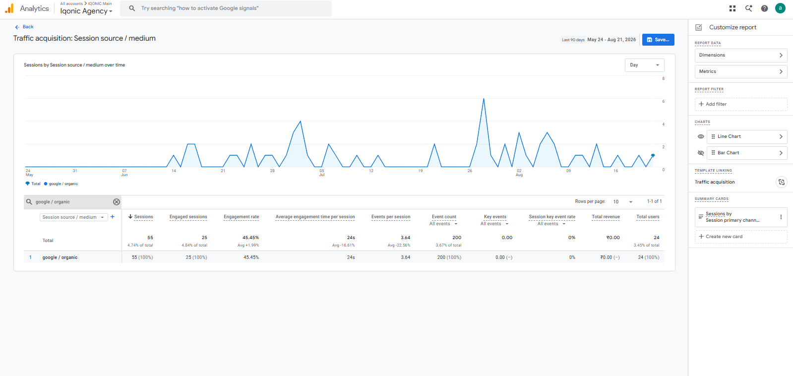
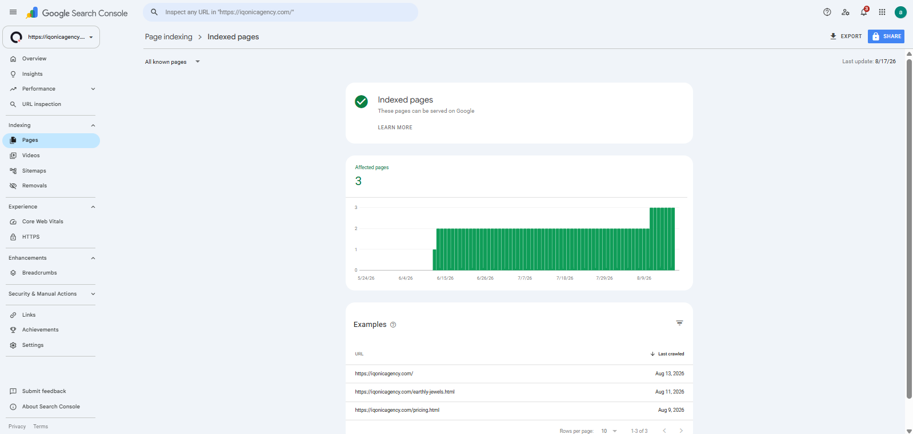
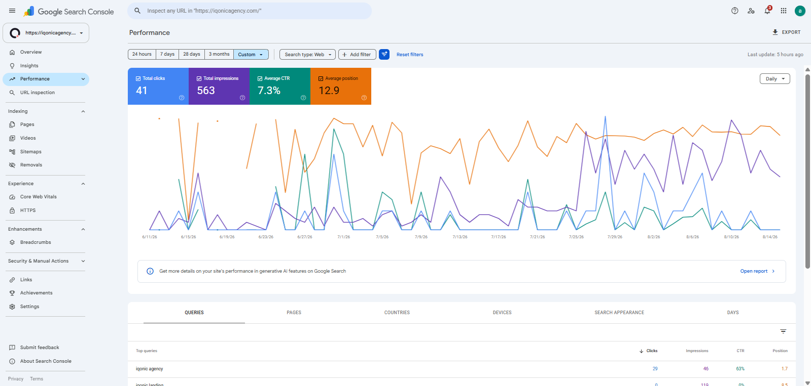
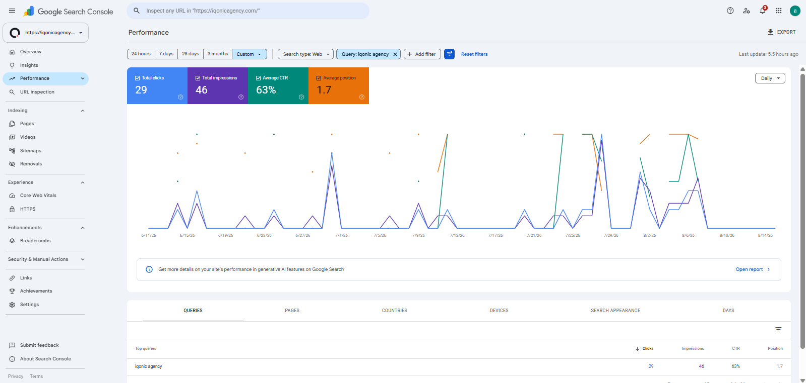
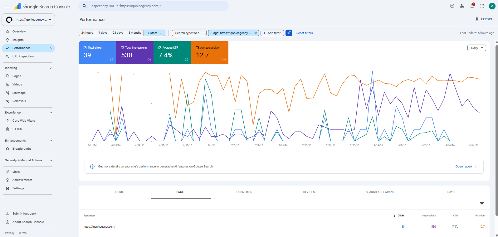
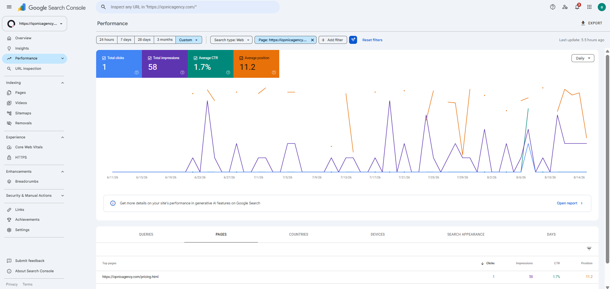

The Starting Point
Most of the website design and content already existed when I started.
The site itself was technically stable.
HTTPS was already implemented.
The website was mobile responsive.
There were no major issues involving:
- Broken links
- Redirects
- 404 errors
The problem was that several basic SEO and search-management elements had not yet been completed.
The initial review identified:
- Missing metadata
- Improper heading hierarchy
- Missing image alt text
- Limited internal linking
- Missing canonical tags
- Weak page-title structure
- No XML sitemap
- No robots.txt setup
- No Google Search Console setup
- No GA4 tracking setup
- No structured data implementation
The challenge therefore was not:
It was:
The Initial SEO Problems
Because the site contained only three pages within my SEO scope, the problems were relatively focused.
On-Page SEO
The main page-level issues included:
- Missing or weak meta titles
- Missing or weak meta descriptions
- Improper H1 structure
- H2 and H3 hierarchy issues
- Missing image alt text
- Very little internal linking
- Missing canonical tags
- Weak page-title structure
- Limited anchor-text optimization
The existing content itself did not require a complete rewrite.
The bigger opportunity was improving how that content was structured and presented to search engines.
Technical SEO
Several foundational technical elements had not yet been implemented:
- XML Sitemap
- Robots.txt
- Canonical Tags
- Structured Data
- Search Console
- GA4 Tracking
The site itself did not have severe technical problems.
This was primarily a case of completing the infrastructure required for cleaner search management.
Search Measurement
One particularly important gap was tracking.
Without Google Search Console and GA4, the website did not yet have a useful baseline for monitoring:
- Clicks
- Impressions
- Queries
- Page Performance
- Indexing
- Future Traffic Development
Before trying to build a growth strategy, the website needed to become measurable.
Off-Page SEO
As a new domain, the website also had very little authority.
However, running a full backlink campaign for a three-page demo property would have been disproportionate to the project.
The correct approach was therefore to establish only a small initial referring-domain footprint.
My Role
My responsibilities included:
- SEO audit
- On-page SEO recommendations
- Technical SEO
- SEO implementation coordination
- Initial off-page SEO
- Google Search Console monitoring
Because IQONIC Agency was primarily a showcase property, the scope was intentionally kept lightweight.
I did not try to turn a limited SEO assignment into a full-site ownership claim.
The work focused specifically on the three pages and foundational areas that were actually part of my responsibility.
Starting With the Right SEO Scope
One of the most important decisions in this project was deciding what not to do.
A new three-page agency showcase could easily have been overengineered with:
- Large keyword spreadsheets
- Dozens of content recommendations
- A full blog calendar
- Aggressive link building
- Competitor content cloning
- Large technical task lists
But none of that matched the website's actual purpose at the time.
The better sequence was:
This kept the work proportional to the website's stage.
Optimizing the Existing Pages
Full keyword research was intentionally not included in this phase.
Instead of rewriting the website around search terms the business was not yet actively targeting, I retained most of the existing content and improved the SEO structure around it.
The on-page work included:
- Meta titles
- Meta descriptions
- H1 structure
- H2 and H3 hierarchy
- Image alt text
- Internal linking
- Canonical tags
- Content formatting
- Anchor text
- Page-title structure
Content changes were minimal.
The goal was:
rather than:
Improving Metadata and Heading Structure
The website needed clearer page-level signals.
I worked on improving:
Meta Titles
Making page titles clearer and more useful for search.
Meta Descriptions
Adding missing descriptions and improving how pages were represented in results.
H1 Structure
Ensuring pages had a clearer primary heading.
H2 and H3 Hierarchy
Cleaning up heading relationships so page structure was easier to interpret.
These were basic SEO elements, but they were important because the website had not yet developed a mature on-page framework.
Building Internal Linking
Internal linking was also limited.
I introduced links between the important pages within the small site structure.
Because the website only contained a few pages, there was no need for a complex internal-linking architecture.
The goal was simply to ensure that important pages were:
- Connected
- Discoverable
- Contextually Related
- Not Isolated
Relevant anchor text was used where it naturally fit.
This created a cleaner internal path for both users and crawlers.
Establishing Search Measurement
The next important step was giving the website a measurable SEO baseline.
I had:
Google Search Console
and:
Google Analytics 4
configured.
This allowed us to begin monitoring:
- Search Impressions
- Organic Clicks
- Search Queries
- Page Performance
- Indexing
- Future Traffic Development
For a new website, this was particularly important.
Before meaningful SEO growth can be evaluated, there needs to be reliable data showing where the website started.
GA4 Organic Traffic Snapshot
In the supplied 90-day Google Analytics 4 snapshot, google / organic recorded:
Sessions
55
Engaged Sessions
25
Engagement Rate
45.45%
Avg. Engagement Time / Session
24s
Events / Session
3.64
Total Users
24
The GA4 screenshot covers a 90-day reporting window, so I keep it separate from the approximately two-month Search Console narrative rather than treating the two periods as identical.

Building the Technical SEO Foundation
The technical work focused on completing the missing fundamentals rather than solving major technical failures.
XML Sitemap
The website did not have an XML sitemap.
I had one added so the site had a clearer search-engine discovery mechanism.
For a website this small, this was not solving a major crawl-budget problem.
It was simply part of establishing cleaner technical SEO hygiene.
Robots.txt
A robots.txt file was also added as part of the site's basic crawl configuration.
Again, this was foundational rather than corrective.
Canonical Tags
Canonical tags had not been implemented.
I defined the preferred page URLs and coordinated the addition of canonical tags.
This helped provide clearer URL signals and reduced the possibility of unnecessary ambiguity later.
Improving Page Indexing
The homepage had already been discovered by Google.
The remaining two pages in my scope still needed indexing support.
I used Google Search Console to request indexing for:
- Pricing Page
- Earthly Jewels Case Study Page
All three core pages were subsequently indexed.
That gave the project one of its most basic but important milestones:
3 / 3 Core Pages Indexed
For this stage, that was exactly the result I wanted.

Adding Structured Data
Structured data had not yet been implemented.
I prepared the relevant schema markup and shared it with the developer for implementation.
The purpose was to provide search engines with clearer structured information about the website and relevant pages.
This was not about chasing rich results.
It was part of creating a more complete technical foundation.
Improving Page Speed and Core Web Vitals
Page performance was already relatively good.
I therefore do not present speed as a major problem that I solved.
Instead, I worked with the developer on additional:
- Page-Speed Improvements
- Core Web Vitals Improvements
where opportunities existed.
This is important because portfolio case studies should distinguish between:
and:
IQONIC Agency falls into the second category.
Additional Technical Checks
I also reviewed:
- HTTPS
- Mobile Friendliness
- Indexability
- Broken Links
- Redirects
- 404 Errors
No significant problems were found in these areas.
That meant there was no reason to create technical tasks simply to make the project look larger.
The technical work stayed focused on the areas that genuinely needed attention.
Building an Initial Off-Page Footprint
A full authority-building campaign was not justified at this stage.
Instead, I created a few relevant branded backlinks from websites already connected to the wider business ecosystem:
- IQONIC Design
- IQONIC Tech
- Earthly Jewels
These links primarily pointed to the IQONIC Agency homepage.
The main anchor was:
IQONIC Agency
The purpose was to:
- Create the first referring-domain signals
- Support brand discovery
- Establish a small authority footprint
- Connect the new website with relevant existing properties
This was deliberately:
not:
Early Search Results
After approximately two months, Google Search Console showed:
Organic Clicks
41
Search Impressions
563
CTR
7.3%
Average Position
12.9
Pages Indexed
3 / 3
Search Console Queries
23 Reported
At this stage, the recorded queries were branded searches.
That was expected.
No full non-branded keyword strategy had been implemented, so it would be misleading to expect or claim broad commercial SEO visibility.
23 Search Console queries is retained as a reported project metric from the source case study. The supplied overall GSC screenshot directly verifies the clicks, impressions, CTR, and average-position figures shown above.

Early Brand Query Visibility
Some of the queries beginning to generate visibility included:
“iqonic agency”
Clicks
29
Impressions
46
CTR
63%
Average Position
1.7
“iqonic landing”
119 impressions
“iqonic”
77 impressions
These were primarily branded or brand-related queries.
Rather than treating that as a weakness, I see it as an accurate reflection of the project's limited SEO scope.
The website had begun developing search visibility around its identity before any large non-branded strategy had been launched.
The supplied GSC screenshot directly verifies the “iqonic agency” figures. The other two branded-query examples are retained as reported project observations from the original case study.

Homepage Performance
The homepage generated most of the website's early organic visibility.
Clicks
39
Impressions
530
CTR
7.4%
Average Position
12.7
The live homepage today continues to function as the agency's central brand and lead-generation page, covering content production, website work, campaigns, paid growth, SEO/GEO, success stories, and target industries.

Pricing Page Performance
The pricing page also began appearing in search.
Clicks
1
Impressions
58
CTR
1.7%
Average Position
11.2
These numbers are small.
I would not present them as a major ranking achievement.
What matters is that the page had:
The current live pricing page remains a dedicated commercial page presenting multiple agency plans and service combinations, so indexing it as part of the original core three-page scope made sense.

What Improved During the Initial Phase
Within approximately two months:
- All three pages in my SEO scope were indexed
- Google Search Console was configured
- GA4 tracking was configured
- Metadata was implemented
- Heading hierarchy was cleaned up
- Image alt text was added
- Internal linking was introduced
- Canonical signals were implemented
- XML sitemap was added
- Robots.txt was added
- Structured data was implemented
- Page performance received additional optimization
- The brand began appearing in Google Search
- Search impressions began accumulating
- Branded clicks started appearing
- The website received its first relevant referring-domain signals
These were the outcomes the project was designed to create.
What I Intentionally Did Not Do
One of the most important parts of this case study is the work I deliberately chose not to recommend yet.
I did not carry out:
- Full keyword research
- Competitor keyword research
- Full website content rewriting
- Blog strategy
- Topic clusters
- Large-scale content optimization
- Full backlink campaign
- Digital PR
- Local SEO
- Long-term SEO strategy
These areas were not forgotten.
They were outside the justified scope.
IQONIC Agency was primarily built as:
- A Demo Website
- A Portfolio Website
- An Agency Showcase
- A Lead-Generation Property
- A Testing Ground for a New Agency Positioning
Running a large SEO campaign against a three-page showcase property would not have been an efficient use of time or resources.
The better decision was:
What I Would Do If SEO Became a Growth Channel
If IQONIC Agency becomes a serious organic-growth project later, I would move into a broader second phase.
1. Keyword & Search Intent Research
Identify validated commercial opportunities around agency services, industries, customer problems, and commercial search terms.
2. Competitor SEO Analysis
Analyse competing agencies to understand keyword gaps, content gaps, landing-page opportunities, website architecture, and authority gaps.
3. SEO-Led Website Rewrite
Expand the current showcase content into a more search-focused website built around validated user intent.
4. Expand the Case Study Library
Create additional optimized case studies that support proof, long-tail searches, industry relevance, and service relevance.
5. Build a Broader Backlink Profile
Move beyond initial ecosystem links into a structured off-page strategy using relevant websites and stronger target-page planning.
The current live homepage already gives case studies and success stories a prominent role, which would make an expanded search-focused case-study library a logical future SEO asset.
Current SEO Outcome
This is not a case study about:
The outcome is more appropriate to the size and purpose of the project.
After approximately two months, the website had:
Core Pages Indexed
3 / 3
Organic Clicks
41
Search Impressions
563
Search Console Queries
23 Reported
along with:
- Working tracking
- Metadata
- Internal links
- Canonicals
- Sitemap
- Robots.txt
- Structured data
- Improved page performance
- Initial backlinks
- Early branded search visibility
That is the correct way to evaluate this project.
Proof of Work
The evidence is placed directly beside the claims it supports throughout the case study. This section is a compact recap rather than a repeated screenshot gallery.
This keeps the evidence proportional to what the project actually achieved.
Tools & Platforms Used
- Google Search Console
- Google Analytics 4
The project also involved coordination with the website developer for technical implementation and structured data.
The Most Difficult Part
The hardest part of this project was not solving a complex technical issue.
It was resisting the temptation to overengineer SEO.
There are many SEO activities that could have been done.
That does not mean they should have been done.
The website only had three pages in scope and existed primarily as an agency showcase.
Running extensive keyword research, publishing large volumes of content, building dozens of backlinks, and creating a complex organic-growth roadmap would have added work without matching the actual business priority.
The real decision was:
The answer was:
That became the guiding principle for the project.
What I Learned
IQONIC Agency reinforced an important SEO lesson:
Good SEO is also about prioritization.
It is easy to build a long audit containing everything that could theoretically be improved.
The more useful skill is deciding:
For IQONIC Agency, the correct strategy was not maximum SEO activity.
It was:
That made the project smaller in scope, but more disciplined in execution.
My Biggest Takeaway
IQONIC Agency was never intended to become a large SEO growth project during its first two months.
My responsibility was not to apply every SEO tactic available.
It was to identify what the website actually needed and build that foundation properly.
I worked on:
- On-Page SEO
- Technical SEO
- Tracking
- Indexing
- Structured Data
- Internal Linking
- Initial Off-Page Signals
while intentionally keeping the strategy proportional to the website's purpose.
The current numbers are not a dramatic traffic-growth story, and I would not present them as one.
They represent something more appropriate:
For me, this project demonstrates that I can:
Understand the stage of a website, define the right SEO scope, execute the fundamentals properly, and avoid unnecessary SEO work when the business does not yet need it.